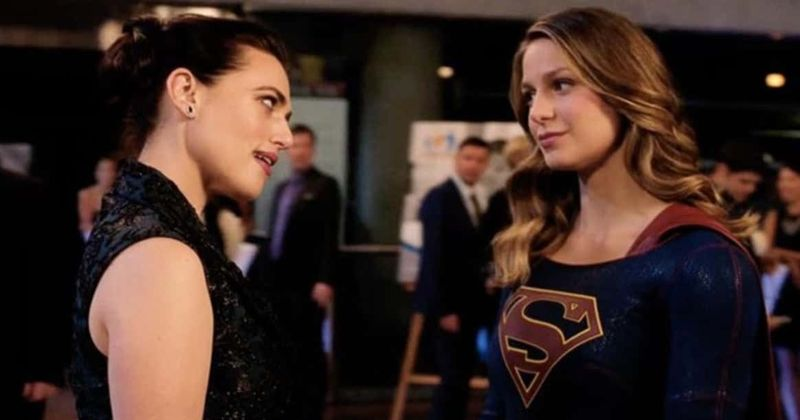

Sobre Lena Luthuor
Lena es hija de Lionel Luthor y una mujer que él conoció en algún viaje de negocios, cuando tenía 4 años su madre falleció.
Lena y Super Girl
Habilidades
- Inteligencia (conocimiento cientifico para crear tecnología y sintetizar varios tipos de kriptonita).
- Experta en Negocios.
- Conocimiento básico de Magia.
Amistades
Lena tiene muy buenos amigos, que siempre la apoyan aunque se equivoque.